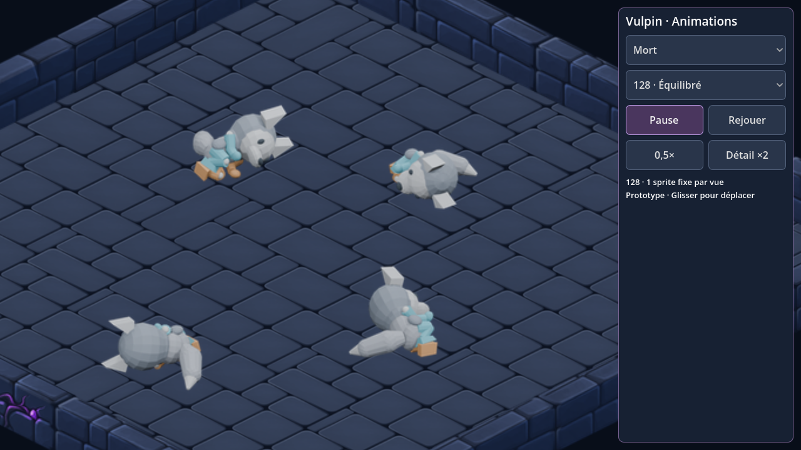

Vulpin — une pose fixe pour la mort
La séquence de chute est supprimée. Après la réaction aux dégâts, le personnage peut passer directement à son sprite au sol : une image par orientation, quatre au total. Les quatre poses existantes sont conservées sans retouche.

Le visualiseur propose maintenant huit états : attente, marche, course, dégâts, crochetage de porte, crochetage de coffre, ramassage et mort. La course accélérée et les autres actions restent identiques à la version précédente.
| Profil 128 px | Avec chute | Mort statique |
|---|
| Paquet du héros | 2,96 Mo | 2,44 Mo (−17,5 %) |
| Pages d’atlas | 4 | 3 |
| Pixels RGBA des atlas | 13,32 Mo | 10,81 Mo |
Mo décimaux. Paquet des ressources du mannequin, hors moteur Android et décors. Les futures textures peintes pourront modifier la compression.
Prototype local vérifié dans Godot. Le visualiseur permet le passage immédiat de « Dégâts » à « Mort » ; la logique du jeu n’est pas encore reliée à ce mannequin. Aucun nouvel APK construit. Les anciennes versions sont conservées pour référence.
Résultats de vérification · État dégâts · Course conservée